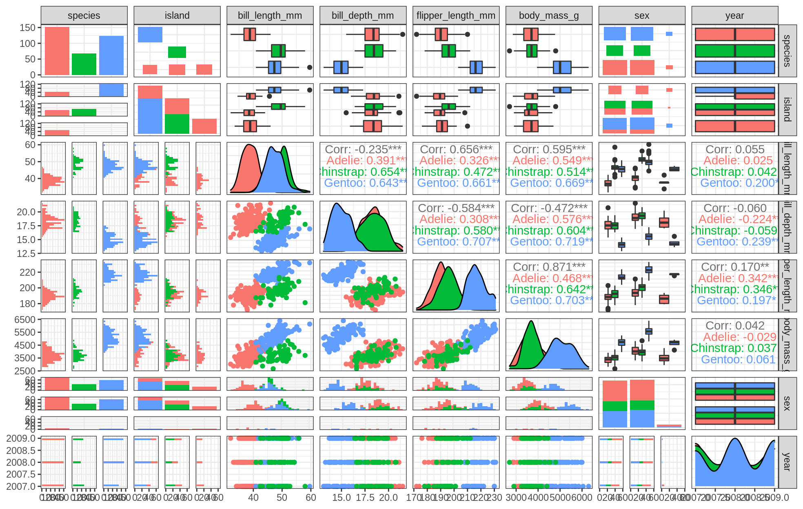
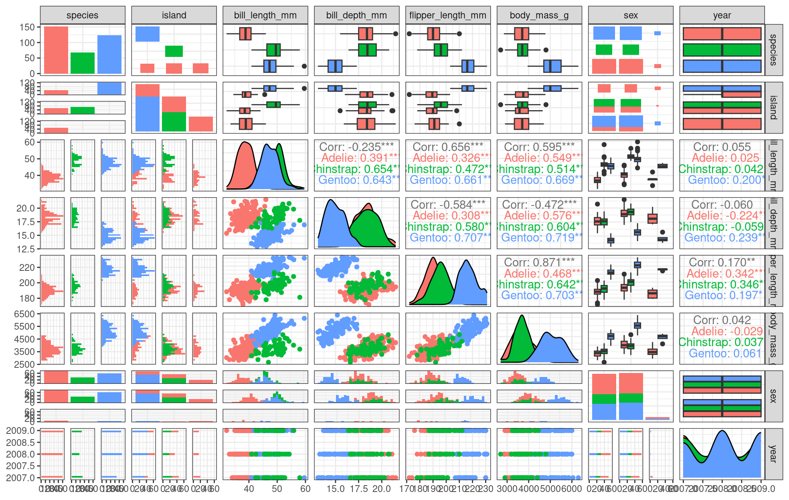
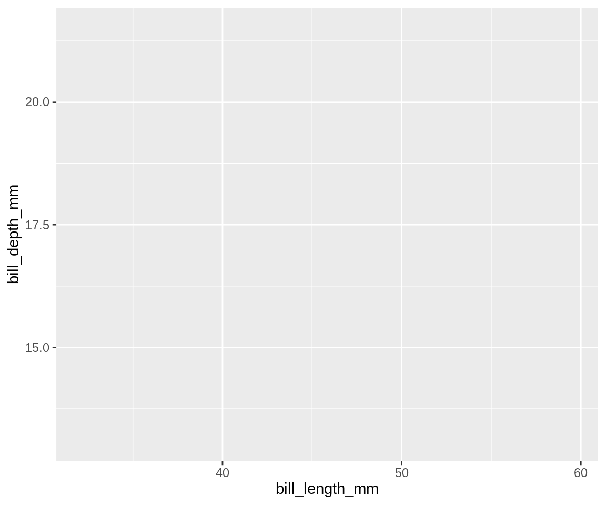
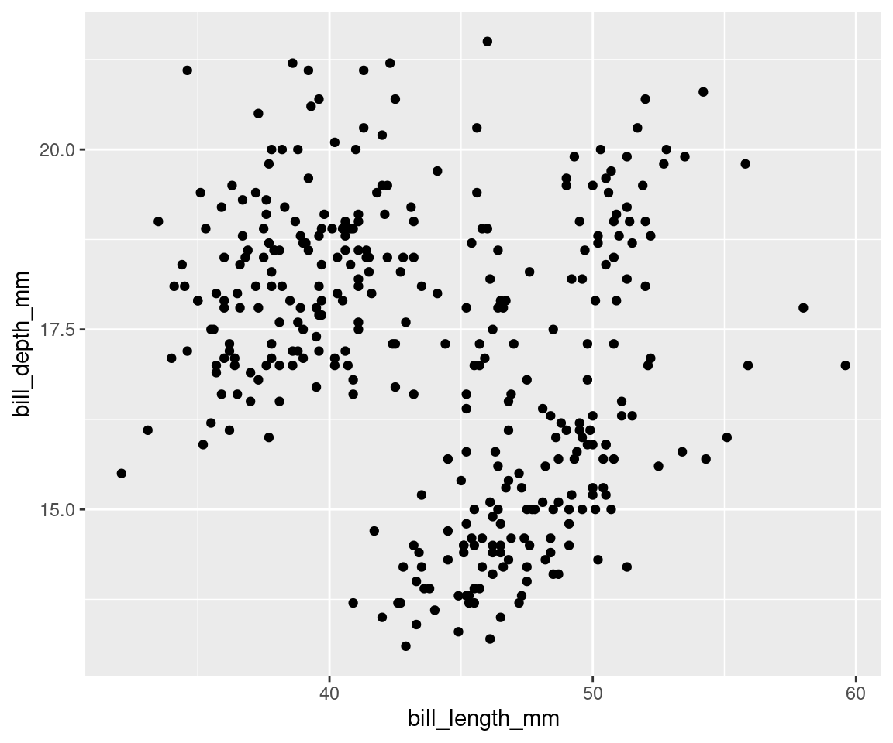
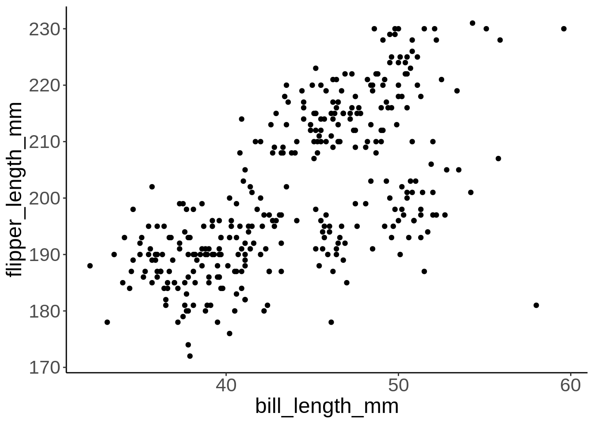
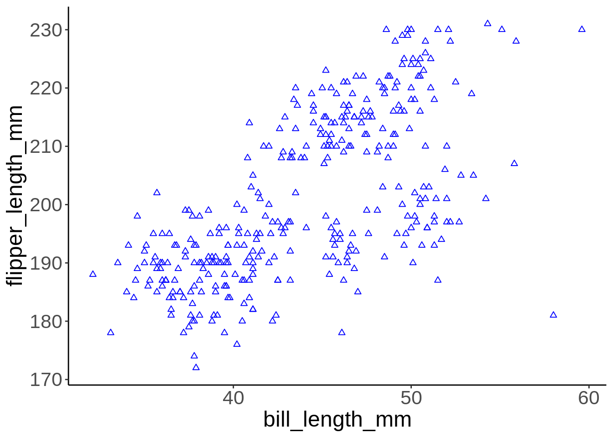

Chapter 6 The basics of visualizing data
6.1 Today’s dataset: palmerpenguins
Now let’s actually try plotting some data! This workshop will be using the dataset from the palmerpenguins (Horst, Hill, and Gorman 2020) package.
.](images/palmerpenguins.png)
Figure 6.1: Artwork by Allison Horst.
This dataset contains size measurements for three penguin species observed on three islands in the Palmer Archipelago, Antarctica. These data were collected from 2007 - 2009 by Dr. Kristen Gorman with the Palmer Station Long Term Ecological Research Program, part of the US Long Term Ecological Research Network.
.](images/penguins.png)
Figure 6.2: Artwork by Allison Horst.
This dataset is often used to replace the iris dataset, which has some problems for teaching data science, including its ties to eugenics (more on this at armchairecology.blog/iris-dataset).
This dataset was also used for a TidyTuesday challenge, showing the many possibilities of visualizing the dataset creatively. For example: this, and this.
Let’s take a look at the variables in the penguins dataset:
## tibble [344 × 8] (S3: tbl_df/tbl/data.frame)
## $ species : Factor w/ 3 levels "Adelie","Chinstrap",..: 1 1 1 1 1 1 1 1 1 1 ...
## $ island : Factor w/ 3 levels "Biscoe","Dream",..: 3 3 3 3 3 3 3 3 3 3 ...
## $ bill_length_mm : num [1:344] 39.1 39.5 40.3 NA 36.7 39.3 38.9 39.2 34.1 42 ...
## $ bill_depth_mm : num [1:344] 18.7 17.4 18 NA 19.3 20.6 17.8 19.6 18.1 20.2 ...
## $ flipper_length_mm: int [1:344] 181 186 195 NA 193 190 181 195 193 190 ...
## $ body_mass_g : int [1:344] 3750 3800 3250 NA 3450 3650 3625 4675 3475 4250 ...
## $ sex : Factor w/ 2 levels "female","male": 2 1 1 NA 1 2 1 2 NA NA ...
## $ year : int [1:344] 2007 2007 2007 2007 2007 2007 2007 2007 2007 2007 ....](images/culmen_depth.png)
Figure 6.3: Artwork by Allison Horst.
Note that species, island, and sex are factor variables, which will be important for grouping the data with colour, shapes, and other aesthetics in ggplot2. There are then two numeric variables (bill measurements depicted in the image), and two integer variables (flipper length and body mass). The data also has a small temporal component (year), spanning the years from 2007 to 2009.
ggplot2 requires you to prepare the data as an object of class data.frame or tibble (common in the tidyverse).
class(penguins) # check the class of the data to ensure it is either a data.frame or tibble for ggplot2## [1] "tbl_df" "tbl" "data.frame"# you can transform a dataset into a tibble using the
# as_tibble() function if need be peng <-
# tibble::as_tibble(penguins) class(peng)♻ Recall from the Loading and manipulating data workshop:
More complex plots in ggplot2 require the long data frame format.
6.2 Asking questions
What are some of the scientific questions we may want to answer with this data-set? Here are some examples:
- Is there a relationship between the length & the depth of bills?
- Does the size of the bill & flipper vary together ?
- How are these measures distributed among the 3 penguin species ?
How can we graphically address these questions with ggplot2?
6.3 Exploring data structure
If we want a general overview of our data, we can start by using the ggpairs() function from the GGally package (which we loaded and installed in the beginning of the workshop). This will allow us to look at initial relationships and then explore them in more detail.
## Get a general overview of the data with multiple plot
## types
ggpairs(penguins, aes(colour = species), progress = FALSE) +
theme_bw()
We can already see some species groupings between bill length and bill depth, flipper length, and body mass. When plotting, it will be important to keep in mind that differentiating species might be important.
Do you see those groupings? We should explore how some of this data is structured by species!
# Let's explore how some of this data is structured by species
ggplot(data = penguins, # Data
aes(x = bill_length_mm, # Your X-value
y = bill_depth_mm, # Your Y-value
col = species)) + # Aesthetics
geom_point(size = 5, alpha = 0.8) + # Point
geom_smooth(method = "lm") + # Linear regression
labs(title = "Relationship between bill length and depth\nfor different penguin species", # Title
x = "Bill length (mm)", # X-axis title
y = "Bill depth (mm)", # Y-axis title
col = "Species") + # Colour data point by species (also creates legend)
theme_classic() + # Apply a clean theme
theme(title = element_text(size = 18, face = "bold"),
text = element_text(size = 16))
By differentiating species, we can see that there is a pretty consistent relationship between bill length and depth across species (similar slopes), but that the ranges of these variables is different (the groupings are clearly shown by the colours). Adelie penguins tend to have smaller bill length but fairly large bill depth, while the inverse is true for Gentoo penguins.
6.4 Working through the layers
As we have discussed, a graphic is made of different layers, combined together to visually communicate information in our data. Let us build a ggplot graphic step by step by adding one layer at a time.
ggplot2 code is easier to read if each line represents a new element. This style is generally favoured for ggplot2 code in the R community. This means that as you add each layer, you should start a new line.
.](images/gglayers.png)
Figure 6.4: Image adapted from The Grammar of Graphics.
6.4.1 Data layer
6.4.2 Aesthetics layer
In ggplot2, aesthetics are a group of parameters that specify what and
how data is displayed. Here, we are telling R to plot bill_length_mm on the x axis and bill_depth_mm on the y axis. We have not yet told R how we want to represent the data though, so our data will not yet be plotted.
6.4.3 Geometric layer
Geometric objects, or geoms, determine the visual representation of your data. We can begin by plotting our data points as a scatter plot, to see how bill depth and bill length relate to each other.
# Next layer(s): geometric object(s)
ggplot(data = penguins,
aes(x = bill_length_mm,
y = bill_depth_mm)) + # Use the plus sign to add each additional layer
geom_point() # The geom layer determines what style of plot we are using.
Note that you can add several geoms in one plot. For example, we could add a line on this plot to show a threshold value, or add a linear regression. For now, let us keep it simple!
6.4.4 Facets, coordinates, and themes
Now that the dataset is plotted, we can customize the plot to clarify the message, or to add more information. Facets are a popular way of dividing a plot into several windows according to some category in the data, to visually differentiate groupings. We can explore this plot differently if we use facet_wrap() to create separate “facets” according to our species groupings:
# Next layer(s): customizations! Facets split a plot into
# separate windows according to some category in the data.
ggplot(data = penguins, aes(x = bill_length_mm, y = bill_depth_mm)) +
geom_point() + facet_wrap(vars(species)) # This splits the plot into three windows: one per species
Note: You could also use facet_grid() if you wanted to facet according to two variables.
We can also adjust the scale of our axes in the plot itself, rather than transforming the data. Let us assume we are interested in looking at the relationship between the bill measurements on a \(log_{10}\) scale.
ggplot(data = penguins, aes(x = bill_length_mm, y = bill_depth_mm)) +
geom_point() + facet_wrap(vars(species)) + # this transforms the axes' coordinates using log10() geom_point()
geom_point() + facet_wrap(vars(species)) + # this transforms the axes' coordinates using log10() +
geom_point() + facet_wrap(vars(species)) + # this transforms the axes' coordinates using log10() facet_wrap(vars(species))
geom_point() + facet_wrap(vars(species)) + # this transforms the axes' coordinates using log10() +
geom_point() + facet_wrap(vars(species)) + # this transforms the axes' coordinates using log10() #
geom_point() + facet_wrap(vars(species)) + # this transforms the axes' coordinates using log10() this
geom_point() + facet_wrap(vars(species)) + # this transforms the axes' coordinates using log10() transforms
geom_point() + facet_wrap(vars(species)) + # this transforms the axes' coordinates using log10() the
geom_point() + facet_wrap(vars(species)) + # this transforms the axes' coordinates using log10() axes'
geom_point() + facet_wrap(vars(species)) + # this transforms the axes' coordinates using log10() coordinates
geom_point() + facet_wrap(vars(species)) + # this transforms the axes' coordinates using log10() using
geom_point() + facet_wrap(vars(species)) + # this transforms the axes' coordinates using log10() log10()
coord_trans(x = "log10", y = "log10")As a final touch, we can also customize the plot’s theme, which includes its background, grid lines, and other visual characteristics of the plot. Let us assume we do not like the default grey background from ggplot2 (we would not be alone in this!). We can use theme_bw() to produce a more visually appealing plot. We will discuss themes in Chapter 11!
ggplot(data = penguins, aes(x = bill_length_mm, y = bill_depth_mm)) +
geom_point() + facet_wrap(vars(species)) + coord_trans(x = "log10",
y = "log10") + # this uses a nicer theme for our final plot y
y = "log10") + # this uses a nicer theme for our final plot =
y = "log10") + # this uses a nicer theme for our final plot "log10")
y = "log10") + # this uses a nicer theme for our final plot +
y = "log10") + # this uses a nicer theme for our final plot #
y = "log10") + # this uses a nicer theme for our final plot this
y = "log10") + # this uses a nicer theme for our final plot uses
y = "log10") + # this uses a nicer theme for our final plot a
y = "log10") + # this uses a nicer theme for our final plot nicer
y = "log10") + # this uses a nicer theme for our final plot theme
y = "log10") + # this uses a nicer theme for our final plot for
y = "log10") + # this uses a nicer theme for our final plot our
y = "log10") + # this uses a nicer theme for our final plot final
y = "log10") + # this uses a nicer theme for our final plot plot
theme_bw()6.5 Challenge 1
Now it’s time to try to build your own plot! Make a ggplot to answer the following questions:
1. Is there a relationship between bill length & flipper length?
2. Does bill length increase with flipper length?
Here are some parameters to consider when addressing this question:
| data | geom | x value | y value |
|---|---|---|---|
| penguins | geom_point | bill_length_mm | flipper_length_mm |
6.5.1 Challenge 1: Solution
Let’s create a scatter plot with bill length on the x-axis and flipper length on the y-axis, to visualize the relationship between these two variables.
# Make a scatter plot to visualize the variables
ggplot(data = penguins, aes(x = bill_length_mm, y = flipper_length_mm)) +
geom_point()
Aesthetics can either be in the ggplot() line, and will be inherited by every geom, or in the geom_() line to apply to that geom only. Here is an example.
# Customize the points' shape and colour
ggplot(data = penguins, aes(x = bill_length_mm, y = flipper_length_mm)) +
geom_point(shape = 2, color = "blue")
Colour, alpha (transparency), shape, and size commands can be set outside of aes() values, and will be static, not data-dependent. Here, blue is not conveying any information in the data - it is just a choice we have made to make a prettier plot.
This plot does appear to show a positive relationship between bill length and flipper length across all the measured individuals in the dataset. So, penguins with longer bills tend to have longer flippers too. We can keep digging into this relationship by building on this plot!
References
Horst, Allison Marie, Alison Presmanes Hill, and Kristen B Gorman. 2020. Palmerpenguins: Palmer Archipelago (Antarctica) Penguin Data. https://doi.org/10.5281/zenodo.3960218.